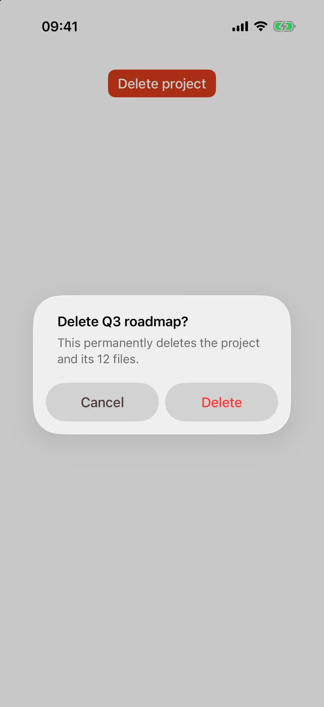

Component showcase · interactive UI preview
SwiftUI FLX
SwiftUI style component library and cross-platform preview gallery.
SUI
ORIGINAL SOURCE INTERFACE
SwiftUI FLX as shown by its source
Original SwiftUI alert example from the FLX repository. The image is a reference; the local controls are in the interactive study below.

INTERACTIVE LOCAL STUDY
Explore the controls
COMPONENT LIBRARY
Native-feeling screens, in motion.
Switch platform and preview the component states. Source implementation remains in the upstream SwiftUI project.
9:41 ●●●
Good morning.
Build beautifully with FLX
TodayPreview the shapes, motion and controls.
SOURCE & INSTALLATION
Continue from the original project
No previous installation record found.
Source at pinned revision →No matching prior installation record found.
- Checkout
- Shallow source checkout
- Revision
955e590bd889- Licence noted
- AGPL-3.0
- This page
- Local UI preview